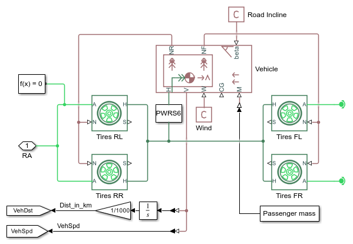
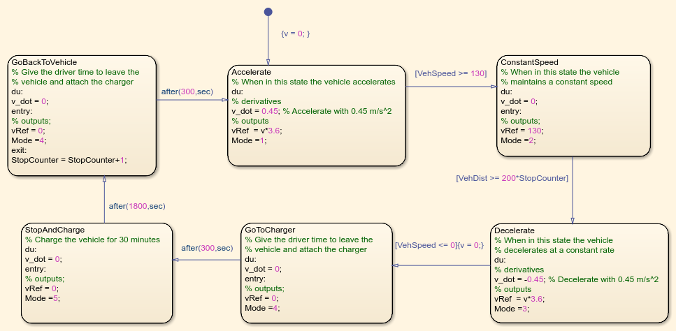
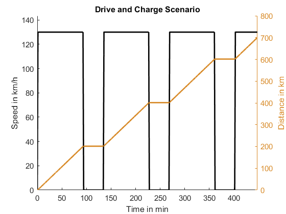
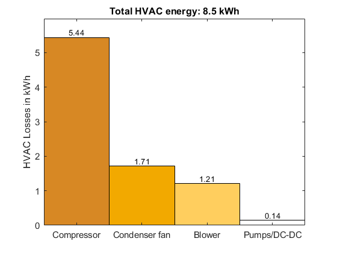
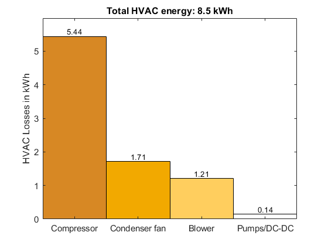

Battery Electric Vehicle Thermal Management System
This example models a battery electric vehicle (BEV) with a thermal management system. This virtual vehicle is parameterized to represent a mid-size sedan with rear wheel drive.
The design is composed of five systems:
- Electric Powertrain (battery, charger, and motor)
- Driveline (tires and chassis)
- Refrigerant Loop (compressor, chiller, and condenser)
- Coolant Loop (radiator, valves)
- Cabin Loop (blower, evaporator, PTC)
The model can be easily adjusted to simulate different vehicle types, such as small city cars or SUVs, with minimal modifications and parameter adjustments.
Contents
Model

Battery
The battery consists of 3072 cylindrical cells (21700 format) in a 96s32p electrical scheme, with a total energy of ~50 kWh when fully charged. It is modeled with Simscape Battery using an electrothermal model. The electrical model monitors the State of Charge (SOC) of the cells, their losses, and the remaining capacity. The thermal model calculates the change in cell temperature due to electrical losses. The battery supplies current to the powertrain on the HV network and is actively cooled by a cooling plate composed of 12 parallel channels.
The battery was created with Simscape Battery and is stored in a library. The script used to generated the library is available HERE.

Charger
When charging, the charger loads the battery with a constant current until the maximum cell voltage is reached. Subsequently, it switches to constant voltage and continues charging until the desired SOC is reached.

Motor
The electric motor is driven by the HV network and is mechanically connected to the vehicle’s rear axle. The virtual vehicle can be easily extended to describe other powertrain architectures (e.g., front or all-wheel drive). The motor’s characteristics and losses are modelled with efficiency maps. Its temperature depends upon the electrical losses and its thermal mass. To transmit the torque to the wheels, the motor is coupled with a gearbox with a constant transmission ratio. The gearbox losses are modelled with a constant efficiency.

DC-DC Converter
The DC-DC converter transforms the battery’s voltage (~380 V) to a lower voltage level (12 V) and supplies the LV components (pumps, blower, and condenser fan). Electrical losses are accounted for with a constant efficiency. A thermal model calculates the temperature change based on the DC-DC thermal mass and its electrical losses.

Driveline
The driveline includes tires and vehicle body. The tire models account for rolling resistance, inertia, and slip. The vehicle body model calculates drag, wind, and road incline losses. The vehicle body also accounts for the impact of the vehicle's mass on acceleration behavior.
Coolant, Refrigerant, and Cabin Loops
The models for the coolant, refrigerant, and cabin cycle have been taken from another shipping example: Electric Vehicle Thermal Management. The example is available at: https://www.mathworks.com/help/hydro/ug/sscfluids_ev_thermal_management.html
The coolant, refrigerant and cabin cycle are connected to the electric network of the virtual vehicle. The compressor and the heater are connected to the battery on the HV network. All other components of refiregerant, coolant, and cabin cylce are connected with the LV network.
Simulation Results: Drive and Charge Scenario
The thermal management system is tested in a drive and charge scenario. The vehicle must be driven a specific distance. The driver accelerates to cruising speed and holds it there until the battery SOC reaches a lower threshold. The driver then decelerates and waits as the battery is charged using a CCCV profile for 30 minutes. This cycle is repeated until the vehicle reaches the specified distance.
This Stateflow chart implements the drive and charge scenario Open Subsystem
Function calcVehicleEnergy calculates the energy losses. The results of this function call can be plotted by using the plotting functions plotEnergySankey, plotHVACEnergy, and plotVehicleEnergy
 
